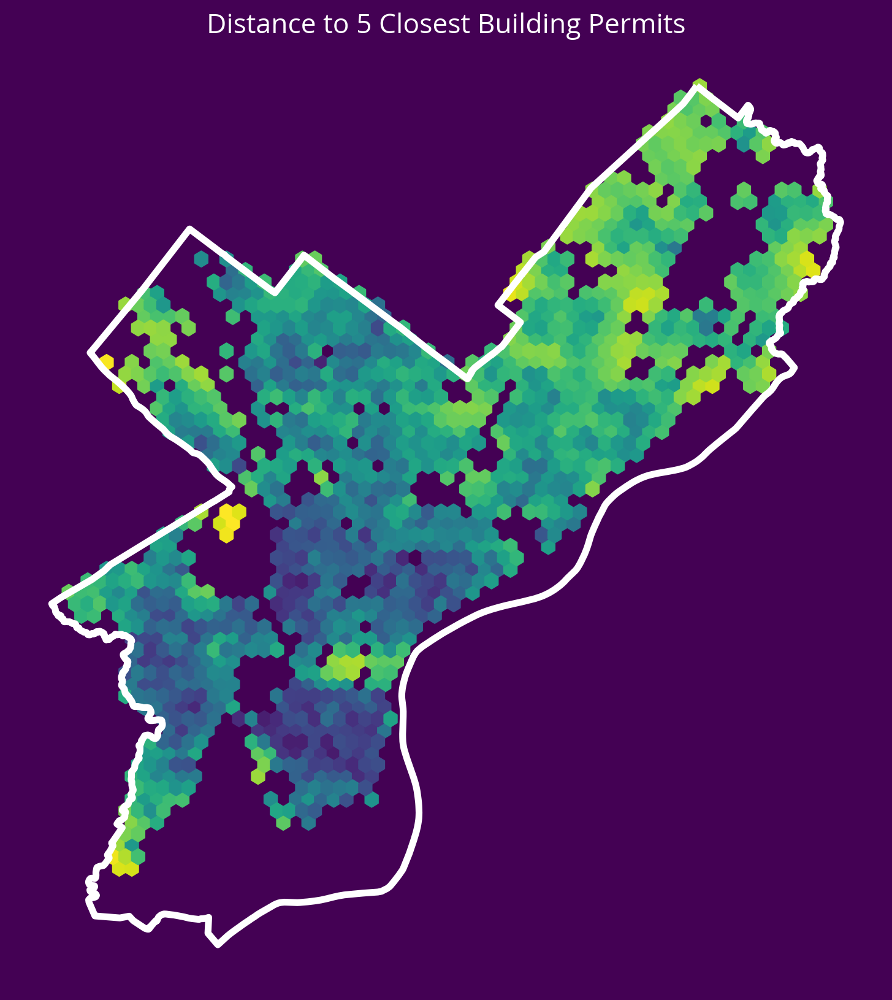

from matplotlib import pyplot as plt
import numpy as np
import pandas as pd
import geopandas as gpd
import hvplot.pandas
import seaborn as sns
import requests
np.random.seed(42)Lecture 13B: Predictive modeling with scikit-learn, continued
pd.options.display.max_columns = 999- Dec 1, 2023
- Section 401
Picking up where we left off
We’ll start by recapping the exercise from last lecture: adding additional distance-based features to our housing price model…
Spatial amenity/disamenity features
The strategy
- Get the data for a certain type of amenity, e.g., restaurants, bars, or disamenity, e.g., crimes
- Data sources: 311 requests, crime incidents, Open Street Map
- Use scikit learn’s nearest neighbor algorithm to calculate the distance from each sale to its nearest neighbor in the amenity/disamenity datasets
Examples of new possible features…
Distance from each sale to:
- Graffiti 311 Calls (last lecture)
- Subway Stops (last lecture)
- Universities
- Parks
- City Hall
- New Construction Permits
- Aggravated Assaults
- Abandoned Vehicle 311 Calls
# Models
from sklearn.linear_model import LinearRegression
from sklearn.ensemble import RandomForestRegressor
# Model selection
from sklearn.model_selection import train_test_split, cross_val_score, GridSearchCV
# Pipelines
from sklearn.pipeline import make_pipeline
# Preprocessing
from sklearn.compose import ColumnTransformer
from sklearn.preprocessing import StandardScaler, PolynomialFeatures, OneHotEncoder
# Neighbors
from sklearn.neighbors import NearestNeighborsdef get_carto_data(table_name, where=None, limit=None):
"""
Download data from CARTO given a specific table name and
optionally a where statement or limit.
"""
# the CARTO API url
carto_url = "https://phl.carto.com/api/v2/sql"
# Create the query
query = f"SELECT * FROM {table_name}"
# Add a where
if where is not None:
query = query + f" WHERE {where}"
# Add a limit
if limit is not None:
query = query + f" LIMIT {limit}"
# Make the request
params = {"q": query, "format": "geojson"}
response = requests.get(carto_url, params=params)
# Make the GeoDataFrame
return gpd.GeoDataFrame.from_features(response.json(), crs="EPSG:4326")Load and clean the data using the utility function above:
# the CARTO API url
carto_url = "https://phl.carto.com/api/v2/sql"
# The table name
table_name = "opa_properties_public"
# Only pull 2022 sales for single family residential properties
where = "sale_date >= '2022-01-01' AND sale_date < '2023-01-01'"
where = where + " AND category_code_description IN ('SINGLE FAMILY', 'Single Family')"
# Run the query
salesRaw = get_carto_data(table_name, where=where)
# Optional: put it a reproducible order for test/training splits later
salesRaw = salesRaw.sort_values("parcel_number")
# The feature columns we want to use
cols = [
"sale_price",
"total_livable_area",
"total_area",
"garage_spaces",
"fireplaces",
"number_of_bathrooms",
"number_of_bedrooms",
"number_stories",
"exterior_condition",
"zip_code",
"geometry"
]
# Trim to these columns and remove NaNs
sales = salesRaw[cols].dropna()
# Trim zip code to only the first five digits
sales['zip_code'] = sales['zip_code'].astype(str).str.slice(0, 5)
# Trim very low and very high sales
valid = (sales['sale_price'] > 3000) & (sales['sale_price'] < 1e6)
sales = sales.loc[valid]len(sales)17695Add new distance-based features:
def get_xy_from_geometry(df):
"""
Return a numpy array with two columns, where the
first holds the `x` geometry coordinate and the second
column holds the `y` geometry coordinate
Note: this works with both Point() and Polygon() objects.
"""
# NEW: use the centroid.x and centroid.y to support Polygon() and Point() geometries
x = df.geometry.centroid.x
y = df.geometry.centroid.y
return np.column_stack((x, y)) # stack as columns# Convert to meters and EPSG=3857
sales_3857 = sales.to_crs(epsg=3857)
# Extract x/y for sales
salesXY = get_xy_from_geometry(sales_3857)New feature: 311 Graffiti Calls
Source: https://www.opendataphilly.org/dataset/311-service-and-information-requests
Download the data:
# Select only those for grafitti and in 2022
where = "requested_datetime >= '01-01-2022' and requested_datetime < '01-01-2023'"
where = where + " AND service_name = 'Graffiti Removal'"
# Pull the subset we want
graffiti = get_carto_data("public_cases_fc", where=where)
# Remove rows with missing geometries
not_missing = ~graffiti.geometry.is_empty & graffiti.geometry.notna()
graffiti = graffiti.loc[not_missing]Get the x/y coordinates for the grafitti calls:
# Convert to meters in EPSG=3857
graffiti_3857 = graffiti.to_crs(epsg=3857)
# Extract x/y for grafitti calls
graffitiXY = get_xy_from_geometry(graffiti_3857)Run the neighbors algorithm to calculate the new feature:
# STEP 1: Initialize the algorithm
nbrs = NearestNeighbors(n_neighbors=5)
# STEP 2: Fit the algorithm on the "neighbors" dataset
nbrs.fit(graffitiXY)
# STEP 3: Get distances for sale to neighbors
grafDists, grafIndices = nbrs.kneighbors(salesXY)
# STEP 4: Get average distance to neighbors
avgGrafDist = grafDists.mean(axis=1)
# Set zero distances to be small, but nonzero
# IMPORTANT: THIS WILL AVOID INF DISTANCES WHEN DOING THE LOG
avgGrafDist[avgGrafDist==0] = 1e-5
# STEP 5: Add the new feature
sales['logDistGraffiti'] = np.log10(avgGrafDist)New feature: Subway stops
Use the osmnx package to get subway stops in Philly — we can use the ox.geometries_from_polygon() function.
- To select subway stations, we can use
station=subway: see the OSM Wikipedia - See Lecture 5A for a reminder on osmnx!
import osmnx as oxGet the geometry polygon for the Philadelphia city limits:
# Download the Philadelphia city limits
url = "https://opendata.arcgis.com/datasets/405ec3da942d4e20869d4e1449a2be48_0.geojson"
city_limits = gpd.read_file(url).to_crs(epsg=3857)
# Get the geometry from the city limits
city_limits_outline = city_limits.to_crs(epsg=4326).squeeze().geometrycity_limits_outline
Use osmnx to query OpenStreetMap to get all subway stations within the city limits:
# Get the subway stops within the city limits
subway = ox.features_from_polygon(city_limits_outline, tags={"station": "subway"})
# Convert to 3857 (meters)
subway = subway.to_crs(epsg=3857)/Users/nhand/mambaforge/envs/musa-550-fall-2023/lib/python3.10/site-packages/shapely/predicates.py:798: RuntimeWarning: invalid value encountered in intersects
return lib.intersects(a, b, **kwargs)
/Users/nhand/mambaforge/envs/musa-550-fall-2023/lib/python3.10/site-packages/shapely/set_operations.py:340: RuntimeWarning: invalid value encountered in union
return lib.union(a, b, **kwargs)Get the distance to the nearest subway station (\(k=1\)):
# STEP 1: x/y coordinates of subway stops (in EPGS=3857)
subwayXY = get_xy_from_geometry(subway.to_crs(epsg=3857))
# STEP 2: Initialize the algorithm
nbrs = NearestNeighbors(n_neighbors=1)
# STEP 3: Fit the algorithm on the "neighbors" dataset
nbrs.fit(subwayXY)
# STEP 4: Get distances for sale to neighbors
subwayDists, subwayIndices = nbrs.kneighbors(salesXY)
# STEP 5: add back to the original dataset
sales["logDistSubway"] = np.log10(subwayDists.mean(axis=1))sales.head()| sale_price | total_livable_area | total_area | garage_spaces | fireplaces | number_of_bathrooms | number_of_bedrooms | number_stories | exterior_condition | zip_code | geometry | logDistGraffiti | logDistSubway | logDistParks | logDistCityHall | |
|---|---|---|---|---|---|---|---|---|---|---|---|---|---|---|---|
| 5703 | 450000 | 1785.0 | 1625.0 | 1.0 | 0.0 | 2.0 | 3.0 | 3.0 | 4 | 19147 | POINT (-75.14860 39.93145) | 2.097791 | 3.337322 | 2.055013 | 3.540530 |
| 12759 | 670000 | 2244.0 | 1224.0 | 0.0 | 0.0 | 3.0 | 4.0 | 3.0 | 3 | 19147 | POINT (-75.14817 39.93101) | 2.215476 | 3.350337 | 1.790892 | 3.550316 |
| 10179 | 790000 | 2514.0 | 1400.0 | 1.0 | 0.0 | 0.0 | 3.0 | 2.0 | 1 | 19147 | POINT (-75.14781 39.93010) | 2.194509 | 3.362296 | 2.042033 | 3.566690 |
| 2807 | 195000 | 1358.0 | 840.0 | 0.0 | 0.0 | 2.0 | 3.0 | 3.0 | 4 | 19147 | POINT (-75.14887 39.93026) | 2.212881 | 3.339347 | 1.857231 | 3.557546 |
| 12637 | 331000 | 868.0 | 546.0 | 0.0 | 0.0 | 2.0 | 2.0 | 2.0 | 3 | 19147 | POINT (-75.14881 39.93012) | 2.206706 | 3.340635 | 1.942614 | 3.560202 |
Now, let’s run the model…
# Numerical columns
num_cols = [
"total_livable_area",
"total_area",
"garage_spaces",
"fireplaces",
"number_of_bathrooms",
"number_of_bedrooms",
"number_stories",
"logDistGraffiti", # NEW
"logDistSubway" # NEW
]
# Categorical columns
cat_cols = ["exterior_condition", "zip_code"]# Set up the column transformer with two transformers
transformer = ColumnTransformer(
transformers=[
("num", StandardScaler(), num_cols),
("cat", OneHotEncoder(handle_unknown="ignore"), cat_cols),
]
)# Initialize the pipeline
# NOTE: only use 20 estimators here so it will run in a reasonable time
pipe = make_pipeline(
transformer, RandomForestRegressor(n_estimators=20, random_state=42)
)# Split the data 70/30
train_set, test_set = train_test_split(sales, test_size=0.3, random_state=42)
# the target labels
y_train = np.log(train_set["sale_price"])
y_test = np.log(test_set["sale_price"])# Fit the training set
# REMINDER: use the training dataframe objects here rather than numpy array
pipe.fit(train_set, y_train);# What's the test score?
# REMINDER: use the test dataframe rather than numpy array
pipe.score(test_set, y_test)0.5858433162524823Can we improve on this?
Exercise from last lecture: How about other spatial features?
- I’ve listed out several other types of potential sources of new distance-based features from OpenDataPhilly
- Choose a few and add new features
- Re-fit the model and evalute the performance on the test set and feature importances
1. Universities
New feature: Distance to the nearest university/college
- Source: OpenDataPhilly
- GeoJSON URL
# Get the data
url = "https://opendata.arcgis.com/api/v3/datasets/8ad76bc179cf44bd9b1c23d6f66f57d1_0/downloads/data?format=geojson&spatialRefId=4326"
univs = gpd.read_file(url)
# Get the X/Y
univXY = get_xy_from_geometry(univs.to_crs(epsg=3857))
# Run the k nearest algorithm
nbrs = NearestNeighbors(n_neighbors=1)
nbrs.fit(univXY)
univDists, _ = nbrs.kneighbors(salesXY)
# Add the new feature
sales['logDistUniv'] = np.log10(univDists.mean(axis=1))fig, ax = plt.subplots(figsize=(10,10), facecolor=plt.get_cmap('viridis')(0))
x = salesXY[:,0]
y = salesXY[:,1]
ax.hexbin(x, y, C=np.log10(univDists.mean(axis=1)), gridsize=60)
# Plot the city limits
city_limits.plot(ax=ax, facecolor='none', edgecolor='white', linewidth=4)
ax.set_axis_off()
ax.set_aspect("equal")
ax.set_title("Distance to Nearest University/College", fontsize=16, color='white');2. Parks
New feature: Distance to the nearest park centroid
- Source: OpenDataPhilly
- GeoJSON URL
Notes - The park geometries are polygons, so you’ll need to get the x and y coordinates of the park centroids and calculate the distance to these centroids. - You can use the geometry.centroid.x and geometry.centroid.y values to access these coordinates.
# Get the data
url = "https://opendata.arcgis.com/datasets/d52445160ab14380a673e5849203eb64_0.geojson"
parks = gpd.read_file(url)
# Get the X/Y
parksXY = get_xy_from_geometry(parks.to_crs(epsg=3857))
# Run the k nearest algorithm
nbrs = NearestNeighbors(n_neighbors=1)
nbrs.fit(parksXY)
parksDists, _ = nbrs.kneighbors(salesXY)
# Add the new feature
sales["logDistParks"] = np.log10(parksDists.mean(axis=1))fig, ax = plt.subplots(figsize=(10, 10), facecolor=plt.get_cmap("viridis")(0))
x = salesXY[:, 0]
y = salesXY[:, 1]
ax.hexbin(x, y, C=np.log10(parksDists.mean(axis=1)), gridsize=60)
# Plot the city limits
city_limits.plot(ax=ax, facecolor="none", edgecolor="white", linewidth=4)
ax.set_axis_off()
ax.set_aspect("equal")
ax.set_title("Distance to Nearest Park", fontsize=16, color="white");3. City Hall
New feature: Distance to City Hall.
- Source: OpenDataPhilly
- GeoJSON URL
Notes
- To identify City Hall, you’ll need to pull data where “NAME=‘City Hall’” and “FEAT_TYPE=‘Municipal Building’”
- As with the parks, the geometry will be a polygon, so you should calculate the distance to the centroid of the City Hall polygon
# Get the data
url = "http://data-phl.opendata.arcgis.com/datasets/5146960d4d014f2396cb82f31cd82dfe_0.geojson"
landmarks = gpd.read_file(url)
# Trim to City Hall
cityHall = landmarks.query("NAME == 'City Hall' and FEAT_TYPE == 'Municipal Building'")# Get the X/Y
cityHallXY = get_xy_from_geometry(cityHall.to_crs(epsg=3857))
# Run the k nearest algorithm
nbrs = NearestNeighbors(n_neighbors=1)
nbrs.fit(cityHallXY)
cityHallDist, _ = nbrs.kneighbors(salesXY)
# Add the new feature
sales["logDistCityHall"] = np.log10(cityHallDist.mean(axis=1))fig, ax = plt.subplots(figsize=(10, 10), facecolor=plt.get_cmap("viridis")(0))
x = salesXY[:, 0]
y = salesXY[:, 1]
ax.hexbin(x, y, C=np.log10(cityHallDist.mean(axis=1)), gridsize=60)
# Plot the city limits
city_limits.plot(ax=ax, facecolor="none", edgecolor="white", linewidth=4)
ax.set_axis_off()
ax.set_aspect("equal")
ax.set_title("Distance to City Hall", fontsize=16, color="white");4. Residential Construction Permits
New feature: Distance to the 5 nearest residential construction permits from 2022
- Source: OpenDataPhilly
- CARTO table name: “permits”
Notes
- You can pull new construction permits only by selecting where
permitdescriptionequals ‘RESIDENTRIAL CONSTRUCTION PERMIT’ - You can select permits from only 2022 using the
permitissuedatecolumn
# Table name
table_name = "permits"
# Where clause
where = "permitissuedate >= '2022-01-01' AND permitissuedate < '2023-01-01'"
where = where + " AND permitdescription='RESIDENTIAL BUILDING PERMIT'"
# Query
permits = get_carto_data(table_name, where=where)
# Remove missing
not_missing = ~permits.geometry.is_empty & permits.geometry.notna()
permits = permits.loc[not_missing]
# Get the X/Y
permitsXY = get_xy_from_geometry(permits.to_crs(epsg=3857))
# Run the k nearest algorithm
nbrs = NearestNeighbors(n_neighbors=5)
nbrs.fit(permitsXY)
permitsDist, _ = nbrs.kneighbors(salesXY)
# Add the new feature
sales["logDistPermits"] = np.log10(permitsDist.mean(axis=1))/var/folders/49/ntrr94q12xd4rq8hqdnx96gm0000gn/T/ipykernel_17229/3972340687.py:12: UserWarning: GeoSeries.notna() previously returned False for both missing (None) and empty geometries. Now, it only returns False for missing values. Since the calling GeoSeries contains empty geometries, the result has changed compared to previous versions of GeoPandas.
Given a GeoSeries 's', you can use '~s.is_empty & s.notna()' to get back the old behaviour.
To further ignore this warning, you can do:
import warnings; warnings.filterwarnings('ignore', 'GeoSeries.notna', UserWarning)
not_missing = ~permits.geometry.is_empty & permits.geometry.notna()fig, ax = plt.subplots(figsize=(10, 10), facecolor=plt.get_cmap("viridis")(0))
x = salesXY[:, 0]
y = salesXY[:, 1]
ax.hexbin(x, y, C=np.log10(permitsDist.mean(axis=1)), gridsize=60)
# Plot the city limits
city_limits.plot(ax=ax, facecolor="none", edgecolor="white", linewidth=4)
ax.set_axis_off()
ax.set_aspect("equal")
ax.set_title("Distance to 5 Closest Building Permits", fontsize=16, color="white");
5. Aggravated Assaults
New feature: Distance to the 5 nearest aggravated assaults in 2022
- Source: OpenDataPhilly
- CARTO table name: “incidents_part1_part2”
Notes
- You can pull aggravated assaults only by selecting where
Text_General_Codeequals ‘Aggravated Assault No Firearm’ or ‘Aggravated Assault Firearm’ - You can select crimes from only 2022 using the
dispatch_datecolumn
# Table name
table_name = "incidents_part1_part2"
# Where selection
where = "dispatch_date >= '2022-01-01' AND dispatch_date < '2023-01-01'"
where = where + " AND Text_General_Code IN ('Aggravated Assault No Firearm', 'Aggravated Assault Firearm')"
# Query
assaults = get_carto_data(table_name, where=where)
# Remove missing
not_missing = ~assaults.geometry.is_empty & assaults.geometry.notna()
assaults = assaults.loc[not_missing]
# Get the X/Y
assaultsXY = get_xy_from_geometry(assaults.to_crs(epsg=3857))
# Run the k nearest algorithm
nbrs = NearestNeighbors(n_neighbors=5)
nbrs.fit(assaultsXY)
assaultDists, _ = nbrs.kneighbors(salesXY)
# Add the new feature
sales['logDistAssaults'] = np.log10(assaultDists.mean(axis=1))fig, ax = plt.subplots(figsize=(10, 10), facecolor=plt.get_cmap("viridis")(0))
x = salesXY[:, 0]
y = salesXY[:, 1]
ax.hexbin(x, y, C=np.log10(assaultDists.mean(axis=1)), gridsize=60)
# Plot the city limits
city_limits.plot(ax=ax, facecolor="none", edgecolor="white", linewidth=4)
ax.set_axis_off()
ax.set_aspect("equal")
ax.set_title("Distance to 5 Closest Assaults", fontsize=16, color="white");6. Abandonded Vehicle 311 Calls
New feature: Distance to the 5 nearest abandoned vehicle 311 calls in 2022
- Source: OpenDataPhilly
- CARTO table name: “public_cases_fc”
Notes
- You can pull abandonded vehicle calls only by selecting where
service_nameequals ‘Abandoned Vehicle’ - You can select crimes from only 2022 using the
requested_datetimecolumn
# Table name
table_name = "public_cases_fc"
# Where selection
where = "requested_datetime >= '2022-01-01' AND requested_datetime < '2023-01-01'"
where = "service_name = 'Abandoned Vehicle'"
# Query
cars = get_carto_data(table_name, where=where)
# Remove missing
not_missing = ~cars.geometry.is_empty & cars.geometry.notna()
cars = cars.loc[not_missing]
# Get the X/Y
carsXY = get_xy_from_geometry(cars.to_crs(epsg=3857))
# Run the k nearest algorithm
nbrs = NearestNeighbors(n_neighbors=5)
nbrs.fit(carsXY)
carDists, _ = nbrs.kneighbors(salesXY)
# Handle any sales that have 0 distances
carDists[carDists == 0] = 1e-5 # a small, arbitrary value
# Add the new feature
sales["logDistCars"] = np.log10(carDists.mean(axis=1))fig, ax = plt.subplots(figsize=(10, 10), facecolor=plt.get_cmap("viridis")(0))
x = salesXY[:, 0]
y = salesXY[:, 1]
ax.hexbin(x, y, C=np.log10(carDists.mean(axis=1)), gridsize=60)
# Plot the city limits
city_limits.plot(ax=ax, facecolor="none", edgecolor="white", linewidth=4)
ax.set_axis_off()
ax.set_aspect("equal")
ax.set_title(
"Distance to 5 Closest Abandoned Vehichle 311 Calls", fontsize=16, color="white"
);
Fit the updated model
# Numerical columns
num_cols = [
"total_livable_area",
"total_area",
"garage_spaces",
"fireplaces",
"number_of_bathrooms",
"number_of_bedrooms",
"number_stories",
"logDistGraffiti", # NEW
"logDistSubway", # NEW
"logDistUniv", # NEW
"logDistParks", # NEW
"logDistCityHall", # NEW
"logDistPermits", # NEW
"logDistAssaults", # NEW
"logDistCars" # NEW
]
# Categorical columns
cat_cols = ["exterior_condition", "zip_code"]# Set up the column transformer with two transformers
transformer = ColumnTransformer(
transformers=[
("num", StandardScaler(), num_cols),
("cat", OneHotEncoder(handle_unknown="ignore"), cat_cols),
]
)# Two steps in pipeline: preprocessor and then regressor
pipe = make_pipeline(
transformer, RandomForestRegressor(n_estimators=20, random_state=42)
)# Split the data 70/30
train_set, test_set = train_test_split(sales, test_size=0.3, random_state=42)
# the target labels
y_train = np.log(train_set["sale_price"])
y_test = np.log(test_set["sale_price"])# Fit the training set
pipe.fit(train_set, y_train);# What's the test score?
pipe.score(test_set, y_test)0.6201555163668022More improvement!
Feature importances:
# The one-hot step
ohe = transformer.named_transformers_["cat"]
# One column for each category type!
ohe_cols = ohe.get_feature_names_out()
# Full list of columns is numerical + one-hot
features = num_cols + list(ohe_cols)
# The regressor
regressor = pipe["randomforestregressor"]
# Create the dataframe with importances
importance = pd.DataFrame(
{"Feature": features, "Importance": regressor.feature_importances_}
)
# Sort importance in descending order and get the top
importance = importance.sort_values("Importance", ascending=False).iloc[:30]
# Plot
importance.hvplot.barh(
x="Feature", y="Importance", flip_yaxis=True, height=500
)Part 2: Predicting bikeshare demand in Philadelphia
The technical problem: predict bikeshare trip counts for the Indego bikeshare in Philadelphia
Using predictive modeling as a policy tool
- Construct a predictive model for trip counts by stations in a bikeshare
- Use this model to estimate and map out the ridership for potential stations in new areas
- Use the cost per ride to estimate the additional revenue added
- Compare this additional revenue to the cost of adding new stations
What are the key assumptions here?
Most important: adding new stations in new areas will not affect the demand for existing stations.
This allows the results from the predictive model for demand, built on existing stations, to translate to new stations.
The key assumption is that the bikeshare is not yet at full capacity, and riders in new areas will not decrease the demand in other areas.
Is this a good assumption?
- Given that the bikeshare is looking to expand, it’s a safe bet that they believe the program is not yet at full capacity
- This is verifiable with existing data — examine trip counts in neighboring stations when a new station opens up.
Typically, this is a pretty safe assumption. But I encourage you to use historical data to verify it!
Let’s plot the stations, colored by the number of docks
Use the contextily package to add a static basemap underneath the matplotlib plot of the stations.
import contextily as ctxfig, ax = plt.subplots(figsize=(15, 10))
# stations
stations_3857 = stations.to_crs(epsg=3857)
stations_3857.plot(ax=ax, column='totalDocks', legend=True)
# plot the basemap underneath
ctx.add_basemap(ax=ax, crs=stations_3857.crs, source=ctx.providers.CartoDB.DarkMatter)
ax.set_axis_off()Load historic trips data
all_trips = pd.read_csv("./data/indego-trips-2018-2023.csv.tar.gz")/var/folders/49/ntrr94q12xd4rq8hqdnx96gm0000gn/T/ipykernel_17229/751211994.py:1: DtypeWarning: Columns (10,14) have mixed types. Specify dtype option on import or set low_memory=False.
all_trips = pd.read_csv("./data/indego-trips-2018-2023.csv.tar.gz")for col in ['start_time', 'end_time']:
all_trips[col] = pd.to_datetime(all_trips[col], format="%Y-%m-%d %H:%M:%S")len(all_trips)3898067all_trips.head()| trip_id | duration | start_time | end_time | start_station | start_lat | start_lon | end_station | end_lat | end_lon | bike_id | plan_duration | trip_route_category | passholder_type | bike_type | |
|---|---|---|---|---|---|---|---|---|---|---|---|---|---|---|---|
| 0 | 223869188 | 18 | 2018-01-01 00:24:00 | 2018-01-01 00:42:00 | 3124 | 39.952950 | -75.139793 | 3073 | 39.961430 | -75.152420 | 3708 | 30.0 | One Way | Indego30 | NaN |
| 1 | 223872811 | 22 | 2018-01-01 00:48:00 | 2018-01-01 01:10:00 | 3026 | 39.941380 | -75.145638 | 3023 | 39.950481 | -75.172859 | 11735 | 30.0 | One Way | Indego30 | NaN |
| 2 | 223872810 | 21 | 2018-01-01 01:03:00 | 2018-01-01 01:24:00 | 3045 | 39.947922 | -75.162369 | 3037 | 39.954239 | -75.161377 | 5202 | 30.0 | One Way | Indego30 | NaN |
| 3 | 223872809 | 4 | 2018-01-01 01:05:00 | 2018-01-01 01:09:00 | 3115 | 39.972630 | -75.167572 | 3058 | 39.967159 | -75.170013 | 5142 | 30.0 | One Way | Indego30 | NaN |
| 4 | 223912960 | 658 | 2018-01-01 01:14:00 | 2018-01-01 12:12:00 | 3045 | 39.947922 | -75.162369 | 3000 | NaN | NaN | 5196 | 30.0 | One Way | Indego30 | NaN |
Dependent variable: total trips by starting station
start_trips = (
all_trips.groupby("start_station").size().reset_index(name="total_start_trips")
)start_trips.head()| start_station | total_start_trips | |
|---|---|---|
| 0 | 3000 | 577 |
| 1 | 3004 | 26544 |
| 2 | 3005 | 21489 |
| 3 | 3006 | 35810 |
| 4 | 3007 | 69165 |
# Now merge in the geometry for each station
bike_data = (
stations[["geometry", "kioskId"]]
.merge(start_trips, left_on="kioskId", right_on="start_station")
.to_crs(epsg=3857)
)Let’s plot it…
fig, ax = plt.subplots(figsize=(10,10))
# stations
bike_data.plot(ax=ax, column='total_start_trips', legend=True)
# plot the basemap underneath
ctx.add_basemap(ax=ax, crs=bike_data.crs, source=ctx.providers.CartoDB.DarkMatter)
ax.set_axis_off()Trips are clearly concentrated in Center City…
What features to use?
There are lots of possible options. Generally speaking, the possible features fall into a few different categories:
- Internal
- e.g., the number of docks per station
- Demographic (Census)
- e.g., population, income, percent commuting by car, percent with bachelor’s degree or higher, etc
- Amenities/Disamenities
- e.g., distance to nearest crimes, restaurants, parks, within Center City, etc
- Transportation network
- e.g., distance to nearest bus stop, interesection nodes, nearest subway stop
- Neighboring stations
- e.g., average trips of nearest stations, distance to nearest stations
Let’s add a few from each category…
1. Internal characteristics
Let’s use the number of docks per stations:
bike_data = bike_data.merge(stations[["kioskId", "totalDocks"]], on="kioskId")
bike_data.head()| geometry | kioskId | start_station | total_start_trips | totalDocks | |
|---|---|---|---|---|---|
| 0 | POINT (-8364995.156 4858291.368) | 3005 | 3005 | 21489 | 13 |
| 1 | POINT (-8371571.911 4858998.543) | 3006 | 3006 | 35810 | 17 |
| 2 | POINT (-8366765.136 4857977.729) | 3007 | 3007 | 69165 | 20 |
| 3 | POINT (-8365734.317 4863154.033) | 3008 | 3008 | 13899 | 17 |
| 4 | POINT (-8370092.475 4859515.524) | 3009 | 3009 | 47041 | 14 |
2. Census demographic data
We’ll try out percent commuting by car first.
import cenpyacs = cenpy.remote.APIConnection("ACSDT5Y2021")acs.varslike("B08134").sort_index().iloc[:15]| label | concept | predicateType | group | limit | predicateOnly | hasGeoCollectionSupport | attributes | required | |
|---|---|---|---|---|---|---|---|---|---|
| B08134_001E | Estimate!!Total: | MEANS OF TRANSPORTATION TO WORK BY TRAVEL TIME... | int | B08134 | 0 | NaN | NaN | B08134_001EA,B08134_001M,B08134_001MA | NaN |
| B08134_002E | Estimate!!Total:!!Less than 10 minutes | MEANS OF TRANSPORTATION TO WORK BY TRAVEL TIME... | int | B08134 | 0 | NaN | NaN | B08134_002EA,B08134_002M,B08134_002MA | NaN |
| B08134_003E | Estimate!!Total:!!10 to 14 minutes | MEANS OF TRANSPORTATION TO WORK BY TRAVEL TIME... | int | B08134 | 0 | NaN | NaN | B08134_003EA,B08134_003M,B08134_003MA | NaN |
| B08134_004E | Estimate!!Total:!!15 to 19 minutes | MEANS OF TRANSPORTATION TO WORK BY TRAVEL TIME... | int | B08134 | 0 | NaN | NaN | B08134_004EA,B08134_004M,B08134_004MA | NaN |
| B08134_005E | Estimate!!Total:!!20 to 24 minutes | MEANS OF TRANSPORTATION TO WORK BY TRAVEL TIME... | int | B08134 | 0 | NaN | NaN | B08134_005EA,B08134_005M,B08134_005MA | NaN |
| B08134_006E | Estimate!!Total:!!25 to 29 minutes | MEANS OF TRANSPORTATION TO WORK BY TRAVEL TIME... | int | B08134 | 0 | NaN | NaN | B08134_006EA,B08134_006M,B08134_006MA | NaN |
| B08134_007E | Estimate!!Total:!!30 to 34 minutes | MEANS OF TRANSPORTATION TO WORK BY TRAVEL TIME... | int | B08134 | 0 | NaN | NaN | B08134_007EA,B08134_007M,B08134_007MA | NaN |
| B08134_008E | Estimate!!Total:!!35 to 44 minutes | MEANS OF TRANSPORTATION TO WORK BY TRAVEL TIME... | int | B08134 | 0 | NaN | NaN | B08134_008EA,B08134_008M,B08134_008MA | NaN |
| B08134_009E | Estimate!!Total:!!45 to 59 minutes | MEANS OF TRANSPORTATION TO WORK BY TRAVEL TIME... | int | B08134 | 0 | NaN | NaN | B08134_009EA,B08134_009M,B08134_009MA | NaN |
| B08134_010E | Estimate!!Total:!!60 or more minutes | MEANS OF TRANSPORTATION TO WORK BY TRAVEL TIME... | int | B08134 | 0 | NaN | NaN | B08134_010EA,B08134_010M,B08134_010MA | NaN |
| B08134_011E | Estimate!!Total:!!Car, truck, or van: | MEANS OF TRANSPORTATION TO WORK BY TRAVEL TIME... | int | B08134 | 0 | NaN | NaN | B08134_011EA,B08134_011M,B08134_011MA | NaN |
| B08134_012E | Estimate!!Total:!!Car, truck, or van:!!Less th... | MEANS OF TRANSPORTATION TO WORK BY TRAVEL TIME... | int | B08134 | 0 | NaN | NaN | B08134_012EA,B08134_012M,B08134_012MA | NaN |
| B08134_013E | Estimate!!Total:!!Car, truck, or van:!!10 to 1... | MEANS OF TRANSPORTATION TO WORK BY TRAVEL TIME... | int | B08134 | 0 | NaN | NaN | B08134_013EA,B08134_013M,B08134_013MA | NaN |
| B08134_014E | Estimate!!Total:!!Car, truck, or van:!!15 to 1... | MEANS OF TRANSPORTATION TO WORK BY TRAVEL TIME... | int | B08134 | 0 | NaN | NaN | B08134_014EA,B08134_014M,B08134_014MA | NaN |
| B08134_015E | Estimate!!Total:!!Car, truck, or van:!!20 to 2... | MEANS OF TRANSPORTATION TO WORK BY TRAVEL TIME... | int | B08134 | 0 | NaN | NaN | B08134_015EA,B08134_015M,B08134_015MA | NaN |
# Means of Transportation to Work by Travel Time to Work
variables = ["NAME", "B08134_001E", "B08134_011E"]
# Pull data by census tract
census_data = acs.query(
cols=variables,
geo_unit="block group:*",
geo_filter={"state": "42",
"county": "101",
"tract": "*"},
)
# Convert to the data to floats
for col in variables[1:]:
census_data[col] = census_data[col].astype(float)
# The percent commuting by car
census_data["percent_car"] = census_data["B08134_011E"] / census_data["B08134_001E"]census_data.head()| NAME | B08134_001E | B08134_011E | state | county | tract | block group | percent_car | |
|---|---|---|---|---|---|---|---|---|
| 0 | Block Group 1, Census Tract 1.01, Philadelphia... | 0.0 | 0.0 | 42 | 101 | 000101 | 1 | NaN |
| 1 | Block Group 2, Census Tract 1.01, Philadelphia... | 0.0 | 0.0 | 42 | 101 | 000101 | 2 | NaN |
| 2 | Block Group 3, Census Tract 1.01, Philadelphia... | 0.0 | 0.0 | 42 | 101 | 000101 | 3 | NaN |
| 3 | Block Group 4, Census Tract 1.01, Philadelphia... | 763.0 | 313.0 | 42 | 101 | 000101 | 4 | 0.410223 |
| 4 | Block Group 5, Census Tract 1.01, Philadelphia... | 479.0 | 191.0 | 42 | 101 | 000101 | 5 | 0.398747 |
Merge with block group geometries for Philadelphia:
import pygris# Query for tracts
block_groups = pygris.block_groups(state='42', county='101', year=2021)census_data = block_groups.merge(
census_data,
left_on=["STATEFP", "COUNTYFP", "TRACTCE", "BLKGRPCE"],
right_on=["state", "county", "tract", "block group"],
)Finally, let’s merge the census data into our dataframe of features by spatially joining the stations and the block groups:
Each station gets the census data associated with the block group the station is within.
bike_data = gpd.sjoin(
bike_data,
census_data.to_crs(bike_data.crs)[["geometry", "percent_car"]],
predicate="within",
).drop(labels=["index_right"], axis=1)bike_data.head()| geometry | kioskId | start_station | total_start_trips | totalDocks | percent_car | |
|---|---|---|---|---|---|---|
| 0 | POINT (-8364995.156 4858291.368) | 3005 | 3005 | 21489 | 13 | 0.509434 |
| 8 | POINT (-8365532.829 4858294.272) | 3015 | 3015 | 27947 | 11 | 0.509434 |
| 1 | POINT (-8371571.911 4858998.543) | 3006 | 3006 | 35810 | 17 | 0.046414 |
| 98 | POINT (-8371183.406 4858854.781) | 3159 | 3159 | 28892 | 23 | 0.046414 |
| 2 | POINT (-8366765.136 4857977.729) | 3007 | 3007 | 69165 | 20 | 0.188889 |
“Impute” missing values with the median value
Note: scikit-learn contains preprocessing transformers to do more advanced imputation methods. The documentation contains a good description of the options.
In particular, the SimpleImputer object (see the docs) can fill values based on the median, mean, most frequent value, or a constant value.
missing = bike_data['percent_car'].isnull()
bike_data.loc[missing, 'percent_car'] = bike_data['percent_car'].median()3. Amenities/disamenities
Let’s add two new features:
- Distances to the nearest 10 restaurants from Open Street Map
- Whether the station is located within Center City
Restaurants
Search https://wiki.openstreetmap.org/wiki/Map_Features for OSM identifier of restaurants
restaurants = ox.features_from_polygon(
city_limits_outline, tags={"amenity": "restaurant"}
).to_crs(epsg=3857)
restaurants.head()/Users/nhand/mambaforge/envs/musa-550-fall-2023/lib/python3.10/site-packages/shapely/predicates.py:798: RuntimeWarning: invalid value encountered in intersects
return lib.intersects(a, b, **kwargs)
/Users/nhand/mambaforge/envs/musa-550-fall-2023/lib/python3.10/site-packages/shapely/set_operations.py:340: RuntimeWarning: invalid value encountered in union
return lib.union(a, b, **kwargs)
/Users/nhand/mambaforge/envs/musa-550-fall-2023/lib/python3.10/site-packages/shapely/predicates.py:798: RuntimeWarning: invalid value encountered in intersects
return lib.intersects(a, b, **kwargs)
/Users/nhand/mambaforge/envs/musa-550-fall-2023/lib/python3.10/site-packages/shapely/predicates.py:798: RuntimeWarning: invalid value encountered in intersects
return lib.intersects(a, b, **kwargs)| amenity | created_by | name | source | wheelchair | geometry | addr:city | addr:housenumber | addr:postcode | addr:street | ... | payment:cards | ship:type | building:levels | area | image | name:ja | name:zn | nonsquare | kitchen_hours | layer | ||
|---|---|---|---|---|---|---|---|---|---|---|---|---|---|---|---|---|---|---|---|---|---|---|
| element_type | osmid | |||||||||||||||||||||
| node | 333786044 | restaurant | Potlatch 0.10f | Sam's Morning Glory | knowledge | limited | POINT (-8366653.605 4857351.702) | NaN | NaN | NaN | NaN | ... | NaN | NaN | NaN | NaN | NaN | NaN | NaN | NaN | NaN | NaN |
| 566683522 | restaurant | NaN | Spring Garden Pizza & Restaurant | NaN | NaN | POINT (-8366499.795 4860429.601) | Philadelphia | 1139 | 19123 | Spring Garden Street | ... | NaN | NaN | NaN | NaN | NaN | NaN | NaN | NaN | NaN | NaN | |
| 596230881 | restaurant | NaN | NaN | NaN | NaN | POINT (-8369759.051 4873925.895) | NaN | NaN | NaN | NaN | ... | NaN | NaN | NaN | NaN | NaN | NaN | NaN | NaN | NaN | NaN | |
| 596245658 | restaurant | NaN | Earth Bread & Brewery | NaN | NaN | POINT (-8370151.987 4874548.737) | NaN | 7136 | NaN | Germantown Ave | ... | NaN | NaN | NaN | NaN | NaN | NaN | NaN | NaN | NaN | NaN | |
| 596245661 | restaurant | NaN | Cresheim Valley Grain Exchange | NaN | NaN | POINT (-8370193.386 4874608.965) | NaN | 7152 | NaN | Germantown Avenue | ... | NaN | NaN | NaN | NaN | NaN | NaN | NaN | NaN | NaN | NaN |
5 rows × 121 columns
Get x/y values for the stations:
stationsXY = get_xy_from_geometry(bike_data)# STEP 1: x/y coordinates of restaurants (in EPGS=3857)
restsXY = get_xy_from_geometry(restaurants.to_crs(epsg=3857))
# STEP 2: Initialize the algorithm
nbrs = NearestNeighbors(n_neighbors=10)
# STEP 3: Fit the algorithm on the "neighbors" dataset
nbrs.fit(restsXY)
# STEP 4: Get distances for stations to neighbors
restsDists, restsIndices = nbrs.kneighbors(stationsXY)
# STEP 5: add back to the original dataset
bike_data['logDistRests'] = np.log10(restsDists.mean(axis=1))bike_data.head()| geometry | kioskId | start_station | total_start_trips | totalDocks | percent_car | logDistRests | |
|---|---|---|---|---|---|---|---|
| 0 | POINT (-8364995.156 4858291.368) | 3005 | 3005 | 21489 | 13 | 0.509434 | 2.316837 |
| 8 | POINT (-8365532.829 4858294.272) | 3015 | 3015 | 27947 | 11 | 0.509434 | 2.622287 |
| 1 | POINT (-8371571.911 4858998.543) | 3006 | 3006 | 35810 | 17 | 0.046414 | 2.408573 |
| 98 | POINT (-8371183.406 4858854.781) | 3159 | 3159 | 28892 | 23 | 0.046414 | 2.686011 |
| 2 | POINT (-8366765.136 4857977.729) | 3007 | 3007 | 69165 | 20 | 0.188889 | 2.586702 |
fig, ax = plt.subplots(figsize=(10,10))
# stations
bike_data.plot(ax=ax, column='logDistRests', legend=True)
# plot the basemap underneath
ctx.add_basemap(ax=ax, crs=bike_data.crs, source=ctx.providers.CartoDB.DarkMatter)
ax.set_axis_off()Within the Center City business district
Available from OpenDataPhilly
url = "http://data.phl.opendata.arcgis.com/datasets/95366b115d93443eae4cc6f498cb3ca3_0.geojson"
ccbd = gpd.read_file(url).to_crs(epsg=3857)ccbd_geo = ccbd.squeeze().geometry
ccbd_geo# Add the new feature: 1 if within CC and 0 otherwise
bike_data['within_centerCity'] = bike_data.geometry.within(ccbd_geo).astype(int)4. Transportation Network
- Let’s add a feature that calculates the distance to the nearest intersections
- We can use the osmnx package
xmin, ymin, xmax, ymax = bike_data.to_crs(epsg=4326).total_boundsCreate the graph object from the bounding box:
G = ox.graph_from_bbox(ymax, ymin, xmax, xmin, network_type='bike')
G/Users/nhand/mambaforge/envs/musa-550-fall-2023/lib/python3.10/site-packages/shapely/predicates.py:798: RuntimeWarning: invalid value encountered in intersects
return lib.intersects(a, b, **kwargs)
/Users/nhand/mambaforge/envs/musa-550-fall-2023/lib/python3.10/site-packages/shapely/set_operations.py:340: RuntimeWarning: invalid value encountered in union
return lib.union(a, b, **kwargs)
/Users/nhand/mambaforge/envs/musa-550-fall-2023/lib/python3.10/site-packages/shapely/set_operations.py:340: RuntimeWarning: invalid value encountered in union
return lib.union(a, b, **kwargs)<networkx.classes.multidigraph.MultiDiGraph at 0x17c48c9d0>Let’s plot the graph using the built-in plotting from osmnx:
ox.plot_graph(G, figsize=(12, 12), node_size=0);Now extract the nodes (intersections) from the graph into a GeoDataFrame:
intersections = ox.graph_to_gdfs(G, nodes=True, edges=False).to_crs(epsg=3857)intersections.head()| y | x | street_count | highway | geometry | |
|---|---|---|---|---|---|
| osmid | |||||
| 109727072 | 39.920114 | -75.176365 | 3 | NaN | POINT (-8368594.627 4854340.318) |
| 109727084 | 39.918876 | -75.176639 | 3 | NaN | POINT (-8368625.162 4854160.598) |
| 109727165 | 39.917601 | -75.176933 | 3 | NaN | POINT (-8368657.901 4853975.496) |
| 109727173 | 39.917476 | -75.176959 | 4 | NaN | POINT (-8368660.784 4853957.411) |
| 109727183 | 39.917126 | -75.177038 | 3 | NaN | POINT (-8368669.590 4853906.554) |
Now, compute the average distance to the 3 nearest intersections:
# STEP 1: x/y coordinates of restaurants (in EPGS=3857)
intersectionsXY = get_xy_from_geometry(intersections.to_crs(epsg=3857))
# STEP 2: Initialize the algorithm
nbrs = NearestNeighbors(n_neighbors=3)
# STEP 3: Fit the algorithm on the "neighbors" dataset
nbrs.fit(intersectionsXY)
# STEP 4: Get distances for stations to neighbors
interDists, interIndices = nbrs.kneighbors(stationsXY)
# STEP 5: add back to the original dataset
bike_data['logIntersectionDists'] = np.log10(interDists.mean(axis=1))Let’s plot the stations, coloring by the new feature (distance to intersections):
fig, ax = plt.subplots(figsize=(10,10))
# stations
bike_data.plot(ax=ax, column='logIntersectionDists', legend=True)
# plot the basemap underneath
ctx.add_basemap(ax=ax, crs=bike_data.crs, source=ctx.providers.CartoDB.DarkMatter)
ax.set_axis_off()5. Neighboring Stations
- We need to include features that encodes the fact that demand for a specific station is likely related to the demand in neighboring stations
- This idea is known as spatial lag
We will add two new features:
- The average distance to the nearest 5 stations
- The average trip total for the nearest 5 stations
First, find the nearest 5 stations:
N = 5
k = N + 1
nbrs = NearestNeighbors(n_neighbors=k)
nbrs.fit(stationsXY)
stationDists, stationIndices = nbrs.kneighbors(stationsXY)Notes
- We are matching the stations to themselves to find the nearest neighbors
- The closest match will always be the same station (distance of 0)
- So we fit for \(k+1\) neighbors and will remove the closest neighbor
The log of the distances to the 5 nearest stations:
bike_data["logStationDists"] = np.log10(stationDists[:, 1:].mean(axis=1))fig, ax = plt.subplots(figsize=(10,10))
# stations
bike_data.plot(ax=ax, column='logStationDists', legend=True)
# plot the basemap underneath
ctx.add_basemap(ax=ax, crs=bike_data.crs, source=ctx.providers.CartoDB.DarkMatter)
ax.set_axis_off()Now, let’s add the trip counts of the 5 neighboring stations:
Use the indices returned by the NearestNeighbors() algorithm to identify which stations are the 5 neighbors in the original data
stationIndices[:, 1:]array([[ 44, 42, 1, 43, 21],
[ 43, 0, 42, 44, 31],
[ 99, 3, 103, 72, 19],
[ 99, 2, 23, 36, 103],
[ 82, 48, 7, 30, 8],
[ 26, 12, 53, 62, 37],
[ 23, 18, 69, 103, 104],
[ 60, 8, 112, 4, 63],
[ 60, 7, 75, 63, 4],
[ 27, 29, 63, 91, 61],
[ 52, 114, 56, 107, 50],
[ 62, 37, 73, 38, 71],
[ 5, 79, 26, 76, 108],
[ 32, 35, 30, 46, 31],
[ 43, 46, 31, 110, 42],
[ 36, 28, 16, 23, 105],
[ 36, 15, 3, 99, 23],
[ 74, 112, 58, 114, 109],
[104, 59, 57, 6, 107],
[ 99, 2, 72, 3, 89],
[ 66, 24, 33, 65, 75],
[ 22, 44, 0, 67, 1],
[ 21, 67, 25, 24, 80],
[103, 6, 3, 36, 15],
[ 25, 20, 82, 66, 67],
[ 24, 22, 67, 82, 20],
[ 5, 53, 12, 37, 62],
[ 29, 9, 28, 105, 63],
[ 29, 27, 105, 15, 9],
[ 27, 28, 9, 105, 63],
[ 31, 32, 48, 13, 46],
[ 30, 46, 32, 43, 48],
[ 13, 30, 35, 31, 46],
[ 66, 20, 65, 106, 98],
[ 84, 64, 69, 103, 6],
[ 13, 32, 30, 46, 100],
[ 16, 15, 3, 23, 99],
[ 38, 73, 11, 53, 92],
[ 37, 92, 73, 53, 54],
[ 55, 56, 54, 52, 73],
[108, 76, 87, 68, 79],
[ 98, 49, 102, 65, 61],
[ 0, 43, 110, 1, 44],
[ 14, 1, 42, 31, 46],
[ 0, 21, 42, 1, 22],
[110, 42, 68, 0, 14],
[ 31, 14, 30, 32, 13],
[ 83, 54, 51, 50, 92],
[ 30, 4, 31, 32, 82],
[ 41, 91, 61, 98, 9],
[ 52, 10, 56, 51, 47],
[ 83, 50, 47, 107, 69],
[ 56, 10, 114, 50, 107],
[ 26, 37, 38, 5, 62],
[ 47, 39, 50, 92, 73],
[ 39, 100, 73, 71, 56],
[ 52, 114, 10, 50, 39],
[104, 59, 58, 107, 109],
[ 74, 109, 57, 114, 17],
[105, 57, 104, 18, 109],
[ 7, 63, 8, 112, 109],
[ 9, 75, 91, 65, 8],
[ 11, 37, 76, 53, 73],
[ 60, 9, 27, 8, 109],
[ 34, 84, 95, 103, 69],
[ 33, 75, 20, 66, 61],
[ 33, 20, 65, 24, 106],
[ 80, 22, 25, 70, 24],
[ 87, 45, 110, 40, 76],
[ 34, 84, 6, 51, 18],
[ 80, 67, 22, 21, 81],
[100, 55, 14, 11, 46],
[ 94, 2, 89, 19, 99],
[ 37, 55, 38, 11, 39],
[ 58, 17, 109, 112, 114],
[ 8, 65, 61, 20, 82],
[ 40, 108, 62, 87, 68],
[ 85, 78, 86, 96, 97],
[ 85, 77, 86, 97, 96],
[108, 12, 40, 76, 5],
[ 67, 70, 81, 22, 25],
[ 80, 101, 70, 67, 66],
[ 4, 24, 48, 25, 20],
[ 51, 47, 50, 54, 69],
[ 34, 69, 64, 90, 96],
[ 77, 78, 86, 96, 97],
[ 77, 96, 85, 90, 78],
[ 68, 40, 45, 76, 110],
[ 93, 95, 90, 64, 94],
[ 94, 72, 19, 2, 99],
[ 96, 84, 86, 64, 95],
[ 9, 61, 49, 29, 27],
[ 38, 54, 37, 73, 47],
[ 88, 95, 90, 94, 64],
[ 72, 89, 95, 2, 19],
[ 64, 94, 90, 34, 72],
[ 86, 90, 83, 84, 47],
[ 92, 38, 53, 37, 26],
[102, 106, 41, 65, 33],
[ 2, 3, 19, 16, 36],
[ 55, 71, 35, 46, 13],
[106, 81, 102, 33, 98],
[ 98, 106, 41, 101, 33],
[ 23, 3, 2, 6, 34],
[ 18, 57, 59, 107, 105],
[ 59, 27, 28, 104, 57],
[ 98, 102, 101, 33, 66],
[ 10, 104, 57, 114, 52],
[ 40, 76, 79, 87, 12],
[ 58, 74, 112, 57, 59],
[ 45, 42, 14, 43, 0],
[113, 115, 102, 101, 106],
[ 17, 74, 109, 60, 7],
[111, 115, 102, 101, 98],
[ 10, 56, 52, 58, 74],
[111, 113, 102, 101, 98]])# the total trips for the stations from original data frame
total_start_trips = bike_data['total_start_trips'].valuestotal_start_tripsarray([21489, 27947, 35810, 28892, 69165, 13899, 47041, 93916, 44622,
60187, 13031, 7115, 11863, 45434, 16961, 55691, 7343, 58307,
57073, 20127, 32433, 34331, 61592, 44565, 39669, 33963, 23814,
76540, 27736, 29139, 40564, 37390, 45958, 37428, 28092, 39622,
41670, 25990, 15460, 41777, 23859, 32078, 57086, 41466, 31487,
26086, 34651, 37950, 70320, 33841, 76197, 73758, 30678, 30889,
45196, 39962, 22193, 45734, 39869, 24477, 48285, 43113, 11012,
60386, 8609, 37196, 27935, 31137, 14511, 21116, 21541, 26265,
26015, 31759, 45904, 32250, 24691, 6164, 5985, 16240, 20299,
39861, 66350, 64882, 10512, 8410, 10036, 17607, 9292, 17148,
4985, 38463, 13656, 5106, 15065, 9527, 26922, 8486, 17799,
11669, 46670, 23682, 25833, 33808, 39587, 48734, 25068, 27349,
15742, 64969, 28877, 4497, 36943, 4409, 19432, 11616])# get the trips for the 5 nearest neighbors (ignoring first match)
neighboring_trips = total_start_trips[stationIndices[:, 1:]]neighboring_tripsarray([[31487, 57086, 27947, 41466, 34331],
[41466, 21489, 57086, 31487, 37390],
[11669, 28892, 33808, 26015, 20127],
[11669, 35810, 44565, 41670, 33808],
[66350, 70320, 93916, 40564, 44622],
[23814, 11863, 30889, 11012, 25990],
[44565, 57073, 21116, 33808, 39587],
[48285, 44622, 36943, 69165, 60386],
[48285, 93916, 32250, 60386, 69165],
[76540, 29139, 60386, 38463, 43113],
[30678, 19432, 22193, 27349, 76197],
[11012, 25990, 31759, 15460, 26265],
[13899, 16240, 23814, 24691, 15742],
[45958, 39622, 40564, 34651, 37390],
[41466, 34651, 37390, 28877, 57086],
[41670, 27736, 7343, 44565, 48734],
[41670, 55691, 28892, 11669, 44565],
[45904, 36943, 39869, 19432, 64969],
[39587, 24477, 45734, 47041, 27349],
[11669, 35810, 26015, 28892, 17148],
[27935, 39669, 37428, 37196, 32250],
[61592, 31487, 21489, 31137, 27947],
[34331, 31137, 33963, 39669, 20299],
[33808, 47041, 28892, 41670, 55691],
[33963, 32433, 66350, 27935, 31137],
[39669, 61592, 31137, 66350, 32433],
[13899, 30889, 11863, 25990, 11012],
[29139, 60187, 27736, 48734, 60386],
[29139, 76540, 48734, 55691, 60187],
[76540, 27736, 60187, 48734, 60386],
[37390, 45958, 70320, 45434, 34651],
[40564, 34651, 45958, 41466, 70320],
[45434, 40564, 39622, 37390, 34651],
[27935, 32433, 37196, 25068, 17799],
[10512, 8609, 21116, 33808, 47041],
[45434, 45958, 40564, 34651, 46670],
[ 7343, 55691, 28892, 44565, 11669],
[15460, 31759, 7115, 30889, 13656],
[25990, 13656, 31759, 30889, 45196],
[39962, 22193, 45196, 30678, 31759],
[15742, 24691, 17607, 14511, 16240],
[17799, 33841, 25833, 37196, 43113],
[21489, 41466, 28877, 27947, 31487],
[16961, 27947, 57086, 37390, 34651],
[21489, 34331, 57086, 27947, 61592],
[28877, 57086, 14511, 21489, 16961],
[37390, 16961, 40564, 45958, 45434],
[64882, 45196, 73758, 76197, 13656],
[40564, 69165, 37390, 45958, 66350],
[32078, 38463, 43113, 17799, 60187],
[30678, 13031, 22193, 73758, 37950],
[64882, 76197, 37950, 27349, 21116],
[22193, 13031, 19432, 76197, 27349],
[23814, 25990, 15460, 13899, 11012],
[37950, 41777, 76197, 13656, 31759],
[41777, 46670, 31759, 26265, 22193],
[30678, 19432, 13031, 76197, 41777],
[39587, 24477, 39869, 27349, 64969],
[45904, 64969, 45734, 19432, 58307],
[48734, 45734, 39587, 57073, 64969],
[93916, 60386, 44622, 36943, 64969],
[60187, 32250, 38463, 37196, 44622],
[ 7115, 25990, 24691, 30889, 31759],
[48285, 60187, 76540, 44622, 64969],
[28092, 10512, 9527, 33808, 21116],
[37428, 32250, 32433, 27935, 43113],
[37428, 32433, 37196, 39669, 25068],
[20299, 61592, 33963, 21541, 39669],
[17607, 26086, 28877, 23859, 24691],
[28092, 10512, 47041, 73758, 57073],
[20299, 31137, 61592, 34331, 39861],
[46670, 39962, 16961, 7115, 34651],
[15065, 35810, 17148, 20127, 11669],
[25990, 39962, 15460, 7115, 41777],
[39869, 58307, 64969, 36943, 19432],
[44622, 37196, 43113, 32433, 66350],
[23859, 15742, 11012, 17607, 14511],
[ 8410, 5985, 10036, 26922, 8486],
[ 8410, 6164, 10036, 8486, 26922],
[15742, 11863, 23859, 24691, 13899],
[31137, 21541, 39861, 61592, 33963],
[20299, 23682, 21541, 31137, 27935],
[69165, 39669, 70320, 33963, 32433],
[73758, 37950, 76197, 45196, 21116],
[28092, 21116, 8609, 4985, 26922],
[ 6164, 5985, 10036, 26922, 8486],
[ 6164, 26922, 8410, 4985, 5985],
[14511, 23859, 26086, 24691, 28877],
[ 5106, 9527, 4985, 8609, 15065],
[15065, 26015, 20127, 35810, 11669],
[26922, 10512, 10036, 8609, 9527],
[60187, 43113, 33841, 29139, 76540],
[15460, 45196, 25990, 31759, 37950],
[ 9292, 9527, 4985, 15065, 8609],
[26015, 17148, 9527, 35810, 20127],
[ 8609, 15065, 4985, 28092, 26015],
[10036, 4985, 64882, 10512, 37950],
[13656, 15460, 30889, 25990, 23814],
[25833, 25068, 32078, 37196, 37428],
[35810, 28892, 20127, 7343, 41670],
[39962, 26265, 39622, 34651, 45434],
[25068, 39861, 25833, 37428, 17799],
[17799, 25068, 32078, 23682, 37428],
[44565, 28892, 35810, 47041, 28092],
[57073, 45734, 24477, 27349, 48734],
[24477, 76540, 27736, 39587, 45734],
[17799, 25833, 23682, 37428, 27935],
[13031, 39587, 45734, 19432, 30678],
[23859, 24691, 16240, 17607, 11863],
[39869, 45904, 36943, 45734, 24477],
[26086, 57086, 16961, 41466, 21489],
[ 4409, 11616, 25833, 23682, 25068],
[58307, 45904, 64969, 48285, 93916],
[ 4497, 11616, 25833, 23682, 17799],
[13031, 22193, 30678, 39869, 45904],
[ 4497, 4409, 25833, 23682, 17799]])# Add to features
bike_data['laggedTrips'] = neighboring_trips.mean(axis=1)Is there a correlation between trip counts and the spatial lag?
Yes!
We can use seaborn to make a quick plot:
sns.regplot(x=bike_data['laggedTrips'], y=bike_data['total_start_trips']);Let’s look at the correlations of all of our features
Again, use seaborn to investigate.
Remember: we don’t want to include multipl features that are highly correlated in our model.
feature_cols = [
"total_start_trips",
"totalDocks",
"percent_car",
"logDistRests",
"within_centerCity",
"logIntersectionDists",
"logStationDists",
"laggedTrips",
]
sns.heatmap(
bike_data[feature_cols].corr(), cmap="coolwarm", annot=True, vmin=-1, vmax=1
);Let’s fit a model!
Just as before, the plan is to: - Fit a random forest model, using cross validation to optimize (some) hyperparameters - Compare to a baseline linear regression model
Perform our test/train split
We’ll use a 60%/40% split, due to the relatively small number of stations.
# Remove unnecessary columns
bike_features = bike_data.drop(labels=["geometry", "kioskId", "start_station"], axis=1)# Split the data
train_set, test_set = train_test_split(
bike_features,
test_size=0.4,
random_state=12345
)
# the target labels: log of total start trips
y_train = np.log(train_set["total_start_trips"])
y_test = np.log(test_set["total_start_trips"])# Extract out only the features we want to use
feature_cols = [
"totalDocks",
"percent_car",
"logDistRests",
"within_centerCity",
"logIntersectionDists",
"logStationDists",
"laggedTrips",
]
train_set = train_set[feature_cols]
test_set = test_set[feature_cols]Random forest results
Let’s run a simple grid search to try to optimize our hyperparameters.
# Setup the pipeline with a standard scaler
pipe = make_pipeline(
StandardScaler(), RandomForestRegressor(random_state=42)
)Try out a few different values for two of the main parameters for random forests: n_estimators and max_depth:
model_name = "randomforestregressor"
param_grid = {
f"{model_name}__n_estimators": [5, 10, 25, 50, 100, 200, 300, 500],
f"{model_name}__max_depth": [None, 2, 5, 7, 9, 13],
}
param_grid{'randomforestregressor__n_estimators': [5, 10, 25, 50, 100, 200, 300, 500],
'randomforestregressor__max_depth': [None, 2, 5, 7, 9, 13]}Important: just like last week, we will need to prefix the parameter name with the name of the pipeline step, in this case, “randomforestregressor”.
# Create the grid and use 10-fold CV
grid = GridSearchCV(pipe, param_grid, cv=10)
# Run the search
grid.fit(train_set, y_train);Evaluate the best estimator on the test set:
grid.best_params_{'randomforestregressor__max_depth': 5,
'randomforestregressor__n_estimators': 25}# Evaluate the best random forest model
best_random = grid.best_estimator_
grid.score(test_set, y_test)0.6157065229263337Evaluate a linear model (baseline) on the test set
# Set up a linear pipeline
linear = make_pipeline(StandardScaler(), LinearRegression())
# Fit on train set
linear.fit(train_set, y_train)
# Evaluate on test set
linear.score(test_set, y_test)0.5985061341399598Only a modest improvement over the baseline model!
Which features were the most important?
From our earlier correlation analysis, we should expect the most important features to be: - the spatially lagged trip counts - the distance to the nearest restaurants - the distance to the nearest stations
# The best model
regressor = grid.best_estimator_["randomforestregressor"]
# Create the dataframe with importances
importance = pd.DataFrame(
{"Feature": train_set.columns, "Importance": regressor.feature_importances_}
)
# Sort importance in descending order and get the top
importance = importance.sort_values("Importance", ascending=False)
# Plot
importance.hvplot.barh(x="Feature", y="Importance", flip_yaxis=True, height=300)importance| Feature | Importance | |
|---|---|---|
| 6 | laggedTrips | 0.527783 |
| 2 | logDistRests | 0.213952 |
| 5 | logStationDists | 0.101589 |
| 0 | totalDocks | 0.091017 |
| 4 | logIntersectionDists | 0.035010 |
| 1 | percent_car | 0.030233 |
| 3 | within_centerCity | 0.000417 |
Let’s analyze the spatial structure of the predictions visually
We’ll plot the predicted and actual trip values
Use the test set index (test_set.index) to get the data from the original data frame (bike_data).
This will ensure we will have geometry info (not used in the modeling) for our test data set:
test_set.indexInt64Index([ 44, 99, 21, 106, 43, 115, 87, 2, 16, 75, 112, 39, 38,
31, 78, 58, 54, 76, 33, 69, 6, 49, 57, 37, 101, 93,
30, 25, 77, 11, 67, 94, 79, 17, 56, 89, 103, 80, 55,
90, 29, 1, 4, 92, 74, 113, 27],
dtype='int64')# Extract the test data from the original dataset
# This will include the geometry data
X = bike_data.loc[test_set.index]# test data extracted from our original data frame
X.head()| geometry | kioskId | start_station | total_start_trips | totalDocks | percent_car | logDistRests | within_centerCity | logIntersectionDists | logStationDists | laggedTrips | |
|---|---|---|---|---|---|---|---|---|---|---|---|
| 44 | POINT (-8367887.236 4861171.207) | 3058 | 3058 | 45196 | 19 | 0.496881 | 2.596062 | 0 | 1.465972 | 2.898925 | 40267.8 |
| 99 | POINT (-8371072.087 4859640.417) | 3160 | 3160 | 33808 | 40 | 0.088623 | 2.514922 | 0 | 1.711444 | 2.924112 | 36880.0 |
| 21 | POINT (-8366456.781 4857132.697) | 3030 | 3030 | 39669 | 29 | 0.495356 | 2.162455 | 0 | 1.584919 | 2.792573 | 38363.6 |
| 106 | POINT (-8368324.722 4858873.658) | 3168 | 3168 | 64969 | 23 | 0.299180 | 2.179807 | 1 | 1.694573 | 2.690814 | 38585.4 |
| 43 | POINT (-8368984.846 4860768.880) | 3057 | 3057 | 73758 | 26 | 0.407225 | 2.772379 | 0 | 1.567825 | 2.873902 | 45498.8 |
test_set.head()| totalDocks | percent_car | logDistRests | within_centerCity | logIntersectionDists | logStationDists | laggedTrips | |
|---|---|---|---|---|---|---|---|
| 44 | 19 | 0.496881 | 2.596062 | 0 | 1.465972 | 2.898925 | 40267.8 |
| 99 | 40 | 0.088623 | 2.514922 | 0 | 1.711444 | 2.924112 | 36880.0 |
| 21 | 29 | 0.495356 | 2.162455 | 0 | 1.584919 | 2.792573 | 38363.6 |
| 106 | 23 | 0.299180 | 2.179807 | 1 | 1.694573 | 2.690814 | 38585.4 |
| 43 | 26 | 0.407225 | 2.772379 | 0 | 1.567825 | 2.873902 | 45498.8 |
#### The data frame indices lines up!
Now, make our predictions, and convert them from log to raw counts:
# Predictions for log of total trip counts
log_predictions = grid.best_estimator_.predict(test_set)
# Convert the predicted test values from log
X['prediction'] = np.exp(log_predictions)Let’s make the plot with side-by-side panels for actual and predicted:
# Plot two columns
fig, axs = plt.subplots(ncols=2, figsize=(10,10))
# Predicted values
X.plot(ax=axs[0], column='prediction')
ctx.add_basemap(ax=axs[0], crs=X.crs, source=ctx.providers.CartoDB.DarkMatter)
axs[0].set_title("Predicted Trip Counts")
# Actual values
X.plot(ax=axs[1], column='total_start_trips')
ctx.add_basemap(ax=axs[1], crs=X.crs, source=ctx.providers.CartoDB.DarkMatter)
axs[1].set_title("Actual Trip Counts")
axs[0].set_axis_off()
axs[1].set_axis_off()
The results are… not great
The good
We are capturing the general trend of within Center City vs. outside Center City
The bad
The values of the trip counts for those stations within Center City do not seem to be well-represented
Can we improve the model?
Yes!
This is a classic example of underfitting, for a few reasons:
- The analysis only used seven features. We should be able to improve the fit by adding more features, particularly features that capture information of the stations within Center City (where the model seems to be struggling).
- The correlation analysis did not indicate much correlation between features, and the features all had a pretty large correlation with the total trip counts. So, in some sense, the features all seem to be important, and we just need to add more.
Features to investigate:
- Additional census demographic data:
- e.g., population, income, percent with bachelor’s degree or higher
- Amenities / disamenities
- Lots of options from OpenDataPhilly and OpenStreetMap
- Criminal incidents, distance to parks, restaurants, new construction permits, etc.
- Transportation network
- Distance to the nearest bus station is a good place to start (see https://wiki.openstreetmap.org/wiki/Map_Features for the amenity tag)
- Changing k values for distance-based features
- Experiment with different values of k to see if they improve the model
That’s it!
Next week (last week!) we’ll talk about an advanced raster data use case.